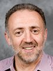
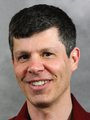
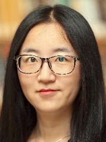
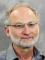
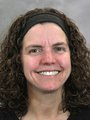

Welcome to Theoretical Computer Science at Brown.
Faculty members
We are proud to have a Gödel prize winner and ACM fellow (Maurice Herlihy), and three ACM and IEEE fellows (Franco Preparata, John Savage and Eli Upfal).
- 
- 

- 


- 

- Yu Cheng: Algorithms, machine learning
- Maurice Herlihy: Distributed and parallel computing
- Sorin Istrail: Computational biology, algorithms
- Seny Kamara: Security and cryptography
- Philip Klein: Algorithms on graphs and networks
- Anna Lysyanskaya: Cryptography
- Peihan Miao: Security and cryptography
- Franco Preparata: Combinatorial computing, algorithms, computational biology
- John Savage: Nanotechnology
- Eli Upfal: Algorithms, probability and applications
- Suresh Venkatasubramanian: Algorithmic fairness, machine learning
Faculty friends
- 

- Amy Greenwald: Artificial intelligence
- Roberto Tamassia: Security
Postdocs
PhD Students
PhD/Postdoc Alumni (since 2006)
- Archita Agarwal (PhD 2021; Denison University)
- Cyrus Cousins (PhD 2021; University of Massachusetts Amherst)
- Jasper Lee (PhD 2021; University of Wisconsin–Madison)
- Megumi Ando (PhD 2020; MITRE)
- Lorenzo De Stefani (PhD 2020; Brown University)
- Amy Becker (PhD 2019)
- Apoorvaa Deshpande (PhD 2019; Snap)
- Thomas Dickerson (PhD 2019; Geopipe)
- Vikram Saraph (PhD 2019; JHU Applied Physics Laboratory)
- Ahmad Mahmoody (PhD 2017; Snap)
- Zhiyu Liu (PhD 2017)
- Alessandro Epasto (Postdoc 2016; Google)
- Irina Calciu (PhD 2015; Graft)
- Hammurabi Mendes (PhD 2015; Davidson College)
- Derek Aguiar (PhD 2014; University of Connecticut)
- Foteini Baldimtsi (PhD 2014; George Mason University)
- David Eisenstat (PhD 2014; Google Research)
- Matteo Riondato (PhD 2014; Amherst College)
- Feng-Hao Liu (PhD 2013; Florida Atlantic University)
- Shay Mozes (PhD 2012; Reichman University)
- Ryan Tarpine (PhD 2012; Google)
- Aparna Das (PhD 2010; Le Moyne College)
- Alptekin Küpçü (PhD 2010; Koç University)
- Yossi Lev (PhD 2010; Intel)
- Eric Rachlin (PhD 2010; Amazon)
- Warren Schudy (PhD 2010; Google Research)
- Mira Belenkiy (PhD 2008; Gradient)
- Melissa Chase (PhD 2008; Microsoft Research)
- Glencora Borradaile (PhD 2007; Oregon State University)
- Aris Anagnostopoulos (PhD 2006; Sapienza University of Rome)
Courses recently offered
- CSCI1450: Introduction to Probability and Computing
- CSCI1510: Introduction to Cryptography and Computer Security
- CSCI1550: Probabilistic Methods in Computer Science
- CSCI1570: Design and Analysis of Algorithms
- CSCI1810: Computational Molecular Biology
- CSCI1820: Algorithmic Foundations of Computational Biology
- CSCI1950-H: Computational Topology
- CSCI2500-B: Optimization Algorithms for Planar Graphs
- CSCI2510: Approximation Algorithms
- CSCI2730: Programming Language Theory
- CSCI2750: Topics in Parallel and Distributed Computing
- CSCI2950-C: Algorithms for Cancer Genomics
- CSCI2951-N: Advanced Algorithms in Computational Biology
- CSCI2951-S: Distributed Computing through Combinatorial Topology
See the full course listing here.